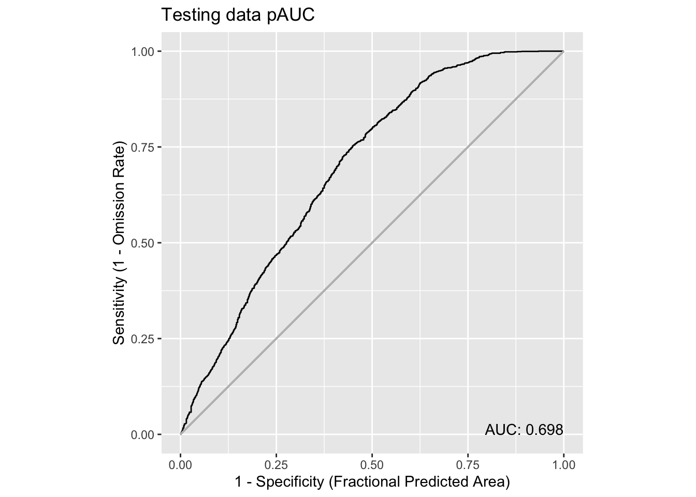
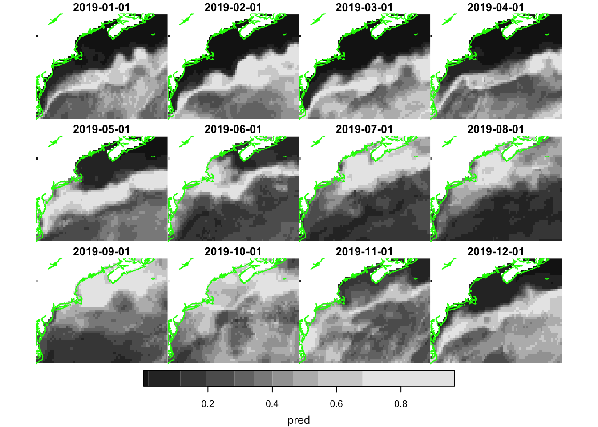
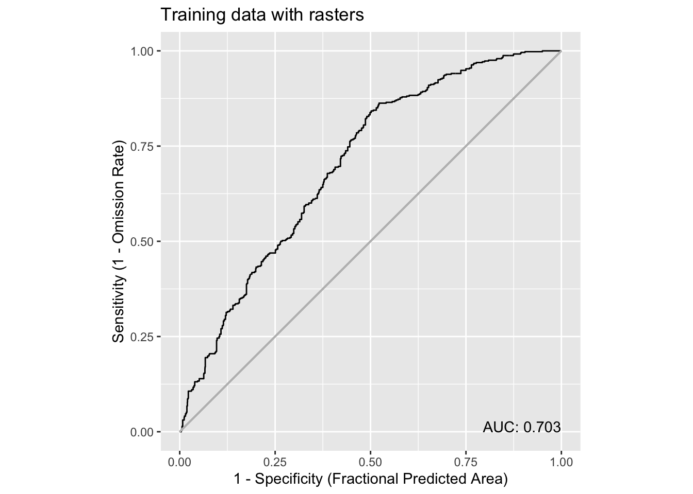

source("setup.R")
obs = sf::read_sf(file.path("data", "obs", "obs-covariates.gpkg"))
obs_flag = rep("training", nrow(obs))
set.seed(1234)
ix_test <- sample(nrow(obs), nrow(obs) * 0.2)
obs_flag[ix_test] = "testing"
obs = dplyr::mutate(obs, grouping = obs_flag) |>
sf::write_sf(file.path("data", "obs", "obs-covariates.gpkg"))Modeling with splits
1 Split into training and testing groups
Let’s split the our presence observations into training (80%) and testing (20%) groups.
We build our models models on the training groups, and, later, we can see that the model might predict for the test cases.
We will make a vector of “training”/“testing” flags to indicate which are training and which are for testing for our obserabtions. Note we set the seed to a fixed number so that the random selection is reproducible. Finally, we add this grouping to each table and then re-save for future use.
2 Model with training data
Now we can proceed, much as we did with our basic model, but using only the training portion of the data. Note that this will be model version v3.0.
You can see below that we only split the observations and not the background. You can try splitting the background, too.
model_path = file.path("data", "model", "v3", "v3.0")
ok = dir.create(model_path, recursive = TRUE, showWarnings = FALSE)
obs_train = dplyr::filter(obs, grouping == "training") |>
sf::st_drop_geometry() |>
dplyr::select("sst", "u_wind", "v_wind") |>
na.omit()
bkg = sf::read_sf(file.path("data", "bkg", "bkg-covariates.gpkg")) |>
sf::st_drop_geometry() |>
dplyr::select("sst", "u_wind", "v_wind") |>
na.omit()
train = dplyr::bind_rows(obs_train, bkg)
flags = c(rep(1, nrow(obs_train)), rep(0, nrow(bkg)))
model = maxnet::maxnet(flags, train) |>
maxnetic::write_maxnet(file.path(model_path, "model_v3.0.rds"))
plot(model, type = "cloglog")These response plots look remarkably like the ones from our basic model, which should not come as a surprise. But let’s now predict with all of the data, and compute AUC with just our 20% testing data set.
Note
Note that the input to predict (below) includes an extra variable, grouping, which is not a covariate used to build the model. This implementation of predict() is perfectly happy to have extra variables in the input, as long as the covariates used to build the model are present.
input_obs = obs |>
sf::st_drop_geometry() |>
dplyr::select("sst", "u_wind", "v_wind", "grouping") |>
na.omit()
input = input_obs |>
dplyr::bind_rows(dplyr::mutate(bkg, grouping = "background"))
pred = predict(model, input, type = "cloglog") |>
as.vector()
pred_test = pred[input$grouping == "testing"]
pauc = maxnetic::pAUC(pred, pred_test)
plot(pauc, title = "Testing data pAUC")Warning in ggplot2::geom_segment(ggplot2::aes(x = 0, y = 0, xend = 1, yend = 1), : All aesthetics have length 1, but the data has 1001 rows.
ℹ Please consider using `annotate()` or provide this layer with data containing
a single row.
That’s pretty good - no significant change in the predictive performance.
We can also see how this might work using raster inputs to predict. We’ll once again apply the model to the months of 2019. We read in thr databases, filter those and then read the predictors.
dates = as.Date(c("2019-01-01", "2019-12-31"))
sst_path = "data/oisst"
sst_db = oisster::read_database(sst_path) |>
dplyr::arrange(date) |>
dplyr::filter(dplyr::between(date, dates[1], dates[2]))
wind_path = "data/nbs"
wind_db = nbs::read_database(wind_path) |>
dplyr::arrange(date)|>
dplyr::filter(dplyr::between(date, dates[1], dates[2]))
u_wind_db = wind_db |>
dplyr::filter(param == "u_wind")|>
dplyr::filter(dplyr::between(date, dates[1], dates[2]))
v_wind_db = wind_db |>
dplyr::filter(param == "v_wind")|>
dplyr::filter(dplyr::between(date, dates[1], dates[2]))
predictors = read_predictors(sst_db = sst_db,
u_wind_db = u_wind_db,
v_wind_db = v_wind_db)Now we make the predictions with the raster covariates.
pred = predict(model, predictors, type = 'cloglog')
coast = rnaturalearth::ne_coastline(scale = 'large', returnclass = 'sf') |>
sf::st_crop(pred)Warning: attribute variables are assumed to be spatially constant throughout
all geometriesplot_coast = function() {
plot(sf::st_geometry(coast), col = 'green', add = TRUE)
}
plot(pred, hook = plot_coast)
Well, no surprises in the appearance. Next, we compute and plot the ROCs.
pauc = maxnetic::pAUC(pred,
dplyr::filter(obs, grouping == 'testing'),
time_column = 'month_id')
plot(pauc, title = "Testing data with rasters")Warning in ggplot2::geom_segment(ggplot2::aes(x = 0, y = 0, xend = 1, yend = 1), : All aesthetics have length 1, but the data has 1001 rows.
ℹ Please consider using `annotate()` or provide this layer with data containing
a single row.Whoa! It looks different, but has the same AUC. How’s that possible? Well, in each use of maxnetic::pAUC() we are providing the same presence values; it doesn’t look like from a workflow standpoint (point data vs raster data), but we are predicting the same values with the same model. These presence point values provide the same way points over which the area is computed regardless of which workflow we used. It is true the “universe” of predicted values changed as we switched from points to rasters, and that gives rise to the textual change in the curve (in this case smooth vs bumpy). But area captured under the curve remains the same. Surprising!
Let’s flip the situation by computing AUC for the training data using the raster predictors.
pauc = maxnetic::pAUC(pred,
dplyr::filter(obs, grouping == 'training'),
time_column = 'month_id')
plot(pauc, title = 'Training data with rasters')Warning in ggplot2::geom_segment(ggplot2::aes(x = 0, y = 0, xend = 1, yend = 1), : All aesthetics have length 1, but the data has 1001 rows.
ℹ Please consider using `annotate()` or provide this layer with data containing
a single row.
It’s a slightly higher AUC, given that the model was trained on that data and that there are more points it isn’t too surprising that AUC is different. But it isn’t wildly different which is informative about how the stable model is.